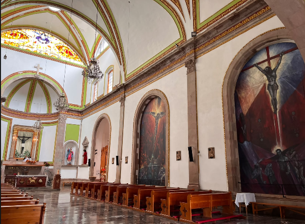
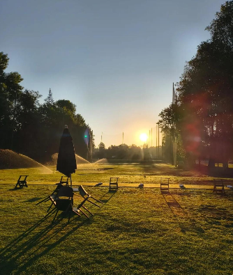
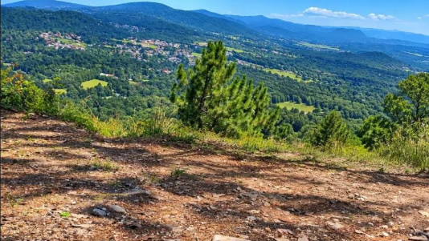

LUGAR 1
"Parroquia de San Francisco de Asís, Valle de BravoLa Parroquia de San Francisco de Asís está en el centro de Valle de Bravo, frente a la Plaza de la Independencia, y es el símbolo más importante del pueblo.
Es considerada un monumento histórico por el INAH.Su historia empieza en el siglo XVI con la llegada de los franciscanos. Desde el año 1600 ya se hacían bautismos en el lugar. En 1606 se empezó a construir la primera iglesia del pueblo, que se conocía como la Ermita. Treinta años después, en 1636, se levantó la parroquia que sustituyó a ese primer templo.

LUGAR 2
"Iglesia de Santa María Ahuacatlán, Valle de BravoLa Iglesia de Santa María Ahuacatlán, también conocida como Santuario del Señor de Santa María, está en el barrio de Santa María Ahuacatlán, a unas cuadras del centro de Valle de Bravo. Es una de las iglesias más antiguas del pueblo y es muy querida por los vallesanos."

LUGAR 3
"El campo de golf de Avándaro es uno de los más bonitos de Valle de Bravo y está a 10 minutos del centro, camino a Avándaro.Es lo más llamativo si te gusta lo tranquilo y con vista. El campo es enorme, todo verde, rodeado de bosque y con la vista del lago al fondo. Es un campo de 18 hoyos, profesional."
¿Qué más tiene?
No es solo golf. Tiene hotel, casa club, spa, gimnasio, alberca semiolímpica, 8 canchas de tenis, squash, pádel, campo de fútbol, salón de yoga, kids club, driving range, renta de caddies y bastones, clases de golf y salones para eventos.Ahí hacen muchos torneos, eventos empresariales, el Festival de Paellas (31 de octubre, $1,650 por persona), torneos del Día del Padre, etc. En 2026 acaban de remodelar el Salón Jardín para eventos.Membresías: Hay de por vida, familiar, junior y transitoria. La inversión inicial anda desde $500,000 MXN y la cuota mensual aprox. $18,500 MXN.

LUGAR 4
"La Huerta Es una comunidad rural ubicada a unos 8 km al sureste de Valle de Bravo, dentro del Área Natural Protegida (ANP) Zona Protectora Forestal de las Cuencas de los Ríos Valle de Bravo, Malacatepec, Tilostoc y Temascaltepec, conocida como el "Santuario del Agua".
¿Por qué es conocida? Por su manantial. Es un manantial que nace en medio del bosque del Área Natural Protegida de Valle de Bravo y abastece a unas 250 personas que viven ahí.El problema del agua: Hace como 2 años se quedaron casi sin agua y se declararon en "Día Cero". Las mujeres de la comunidad, con Anallely Velásquez Gómez como presidenta del Comité del Agua, se organizaron para cuidar el manantial.El conflicto: Esa comunidad colinda con el Rancho San Jorge, que en abril fue asegurado por la FGR porque tenía 10 presas captadoras de agua construidas de forma ilegal adentro. Eso les cortaba el agua a La Huerta y a Mesa Rica.Lo bonito: En septiembre de 2026 los niños de la primaria de La Huerta San Agustín, junto con Mesa Rica y El Manzano, crearon su propio himno comunitario en el proyecto "Mi tierra, mi canción" de Fundación Valle La Paz.